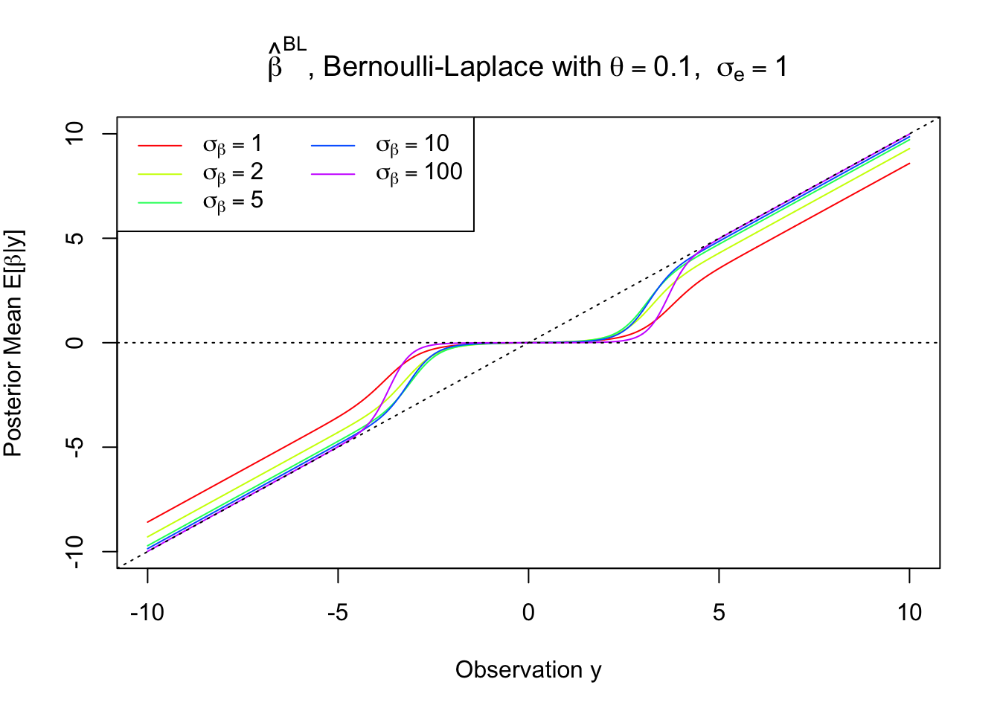
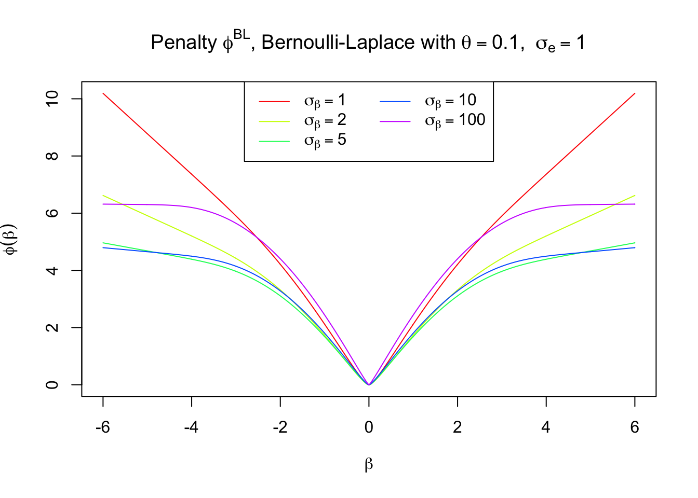
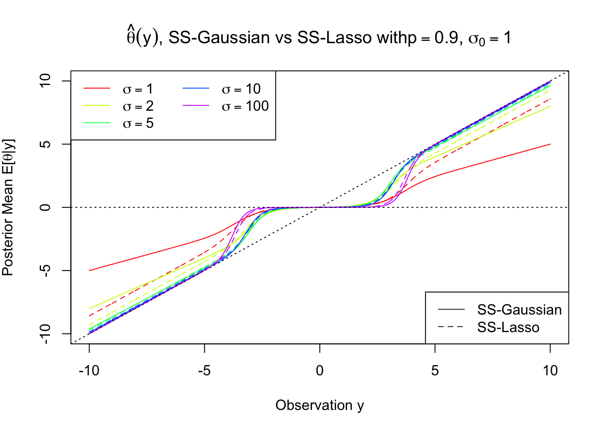

Bernoulli-Laplace & Normal Means
Lei Sun
2017-03-12
Last updated: 2017-03-14
Code version: d618500
Problem
Following Bernoulli-Gaussian, we now consider Bernoulli-Laplace normal means problem
\[ \begin{array}{l} z|\mu \sim N(\mu, s^2)\\ g(\mu) = \pi\delta_0 + (1 - \pi)\frac\lambda 2e^{-\lambda|\mu|}\\ \end{array} \] whose prior is a special case of Spike-and-slab Laplace prior \[ g(\mu) = \pi\frac{\lambda_0}2e^{-\lambda_0|\mu|} + (1 - \pi)\frac\lambda 2e^{-\lambda|\mu|} \] as \(\lambda_0\to\infty\).
General result for mixture priors
Suppose
\[ \begin{array}{l} z|\mu \sim p_\mu \\ \mu | \pi \sim \sum_k\pi_kg_k \end{array} \Rightarrow \begin{array}{rl} p(\mu|z, \pi) &= \frac{p(\mu, z | \pi)}{p(z|\pi)} = \frac{p(z | \mu)p(\mu|\pi)}{p(z|\pi)}\\ &=\frac{p_{\mu}(z) \sum_k\pi_kg_k(\mu)}{\int_\mu p_{\mu}(z) \sum_l\pi_lg_l(\mu)d\mu} =\frac{\sum_k\pi_kp_{\mu}(z) g_k(\mu)}{\sum_l\pi_l\int_\mu p_{\mu}(z) g_l(\mu)d\mu}\\ &=\frac{\sum_k\pi_k\frac{p_{\mu}(z) g_k(\mu)}{\int_\mu p_{\mu}(z) g_k(\mu)d\mu}\int_\mu p_{\mu}(z) g_k(\mu)d\mu}{\sum_l\pi_l\int_\mu p_{\mu}(z) g_l(\mu)d\mu} =\frac{\sum_k\pi_k\int_\mu p_{\mu}(z) g_k(\mu)d\mu\frac{p_{\mu}(z) g_k(\mu)}{\int_\mu p_{\mu}(z) g_k(\mu)d\mu}}{\sum_l\pi_l\int_\mu p_{\mu}(z) g_l(\mu)d\mu}\\ &=\frac{\sum_k\pi_k\int_\mu p_{\mu}(z) g_k(\mu)d\mu}{\sum_l\pi_l\int_\mu p_{\mu}(z) g_l(\mu)d\mu}p_k(\mu|z) =\frac{\sum_k\pi_kf_k(z)}{\sum_l\pi_lf_l(z)}p_k(\mu|z)\\ &=\sum_k\frac{\pi_kf_k(z)}{\sum_l\pi_lf_l(z)}p_k(\mu|z) \end{array} \] where \(f_j(z) := \int_\mu p_{\mu}(z) g_j(\mu)d\mu\) is the marginal density of \(z\), also called the evidence of \(z\), after integrating out \(\mu\) for each prior component. The posterior distribution is also a mixture. Each component is the posterior distribution with the same likelihood and each component of the prior, and the weight is based on the prior weight of each component and the marginal density or evidence for that component.
Normal means with Laplace priors
As discussed above on mixture priors, the first step is to understand the problem when we have a normal likelihood and a Laplace (double exponential) prior centered on \(0\)
\[ \begin{array}{l} z|\mu \sim N(\mu, s^2)\\ g_\lambda(\mu) = \frac\lambda 2e^{-\lambda|\mu|} \end{array} \]
The result can be written out analytically but not as nice as in the normal likelihood and normal prior case. First the marginal density
\[ f_\lambda(z) = [N(0, s^2) * g](z) = \int_{-\infty}^\infty\frac{1}{\sqrt{2\pi}s}e^{-\frac{(z - \mu)^2}{2s^2}}\frac\lambda 2e^{-\lambda|\mu|}d\mu =\frac\lambda2e^{\frac{\lambda^2s^2}{2}}(F_\lambda(z) + F_\lambda(-z)) \]
where
\[ F_\lambda(z) = e^{\lambda z}\Phi(-\frac1s(z + \lambda s^2)) \]
and \(\Phi\) is the cumulative distribution function (cdf) of the standard normal \(N(0, 1)\). Note that
\[ \begin{array}{rrcl} & \frac{d}{dz}F_\lambda(z) & =& \lambda e^{\lambda z}\Phi(-\frac1s(z + \lambda s^2)) - \lambda e^{-\frac{\lambda^2s^2}{2}}\frac{1}{\sqrt{2\pi}s}e^{-\frac{z^2}{2s^2}}\\ & &=& \lambda F_\lambda(z) - \lambda e^{-\frac{\lambda^2s^2}{2}}N(z;0, s)\\ \Rightarrow & \frac{d}{dz}F_\lambda(-z) & = & -(\lambda F_\lambda(-z) - \lambda e^{-\frac{\lambda^2s^2}{2}}N(-z;0, s))\\ & & = & -\lambda F_\lambda(-z) + \lambda e^{-\frac{\lambda^2s^2}{2}}N(z;0, s)) \end{array} \]
Therefore,
\[ \frac{d}{dz}f_\lambda(z) = \frac\lambda2e^{\frac{\lambda^2s^2}{2}}(\frac{d}{dz}F_\lambda(z) + \frac{d}{dz}F_\lambda(-z)) =\frac{\lambda^2}2e^{\frac{\lambda^2s^2}{2}}(F_\lambda(z) - F_\lambda(-z)) \]
By Tweedie’s formula, under Laplace normal means model,
\[ \begin{array}{l} z|\mu \sim N(\mu, s^2)\\ g_\lambda(\mu) = \frac\lambda 2e^{-\lambda|\mu|} \end{array} \Rightarrow \begin{array}{rcl} E[\mu|z] &=& z + s^2\frac{d}{dz}\log f_\lambda(z) \\ &=& z + s^2\frac{\frac{d}{dz}f_\lambda(z)}{f_\lambda(z)}\\ &=&z + s^2\frac{\frac{\lambda^2}2e^{\frac{\lambda^2s^2}{2}}(F_\lambda(z) - F_\lambda(-z))}{\frac\lambda2e^{\frac{\lambda^2s^2}{2}}(F_\lambda(z) + F_\lambda(-z))}\\ &=& z+ \lambda s^2 \frac{F_\lambda(z) - F_\lambda(-z)}{F_\lambda(z) + F_\lambda(-z)}\\ &=&\frac{F_\lambda(z)}{F_\lambda(z) + F_\lambda(-z)}(z + \lambda s^2) +\frac{F_\lambda(-z)}{F_\lambda(z) + F_\lambda(-z)}(z - \lambda s^2) \end{array} \]
Thus the posterior mean of a normal likelihood and a Laplace prior for the normal mean can be seen as a weighted average of \(z \pm \lambda s^2\), with weights denoted
\[ \begin{array}{c} w_\lambda^+(z) = \frac{F_\lambda(z)}{F_\lambda(z) + F_\lambda(-z)}\\ w_\lambda^-(z) = \frac{F_\lambda(-z)}{F_\lambda(z) + F_\lambda(-z)} \end{array} \]
The posterior mean plotted as below.
It shows that the posterior mean of Bayesian lasso, which uses a normal likelihood and Laplace priors, has a flavor of soft thresholding, but not quite the same. It comes from the fact that
\[ \begin{array}{rcl} E[\mu | z] & = & w_\lambda^+(z)(z + \lambda s^2) + w_\lambda^-(z)(z - \lambda s^2) \\ & = & z - (w_\lambda^-(z) - w_\lambda^+(z))\lambda s^2 \end{array} \] in which \(z \pm \lambda s^2\) are essentially the soft thresholding part, and \(F_\lambda(z)\) decreases w.r.t. \(z\), small when \(z\) is positive and vice versa. Or in other words, \((w_\lambda^-(z) - w_\lambda^+(z))\lambda s^2\) is the penalty on the observation \(z\).
Now we are equipped to investigate Bernoulli-Laplace normal means.
Bernoulli-Laplace normal means
The model is
\[ \begin{array}{l} z|\mu \sim N(\mu, s^2)\\ g(\mu) = \pi\delta_0 + (1 - \pi)\frac\lambda 2e^{-\lambda|\mu|}\\ \end{array} \Rightarrow \begin{array}{l} z\sim \pi f_\delta + (1 - \pi)f_\lambda\\ \mu | z \sim p\delta_0 + (1 - p)\mu_\lambda |z \end{array} \] where \(f_\delta = N(0, s^2) * \delta_0 = N(0, s^2)\), the probability density function (pdf) of \(N(0, s^2)\) and \(\mu_\lambda | z\) denotes the posterior distribution when \(\mu\) has a Laplace prior with parameter \(\lambda\), and as discussed in the general mixture priors case,
\[
p = \frac{\pi N(z; 0, s^2)}{\pi N(z; 0, s^2) + (1 - \pi)f_\lambda(z)}
\] where \(N(z; 0, s^2)\) is the probability density of \(z\) under \(N(0, s^2)\), computed directly in R using dnorm(z, 0, s).
Posterior mean
The posterior mean is the optimal Bayesian estimator \(\hat\mu_B\) w.r.t. the quadratic loss. Under Bernoulli-Laplace prior, this posterior mean
\[ E[\mu | z] = (1 - p)E[\mu_\lambda | z] \]
 The posterior mean has flavors of both hard- and soft-thresholding.
Penalty \(\phi_\text{BL}^\text{PM}\) associated with posterior mean
Using the framework detailed in the Bernoulli-Gaussian case, we can find \(\phi\) such that
\[ E[\mu |z] = (1 - p)E[\mu_\lambda | z] =\arg\min_u\frac1{2s^2}(z - u)^2 + \phi(u) \]
in the following steps
For each \(u\), find \(\hat z\) such that \(u = (1 - p)E[\mu_\lambda | \hat z]\).
\(\phi(u) = - \log f(\hat z) - \frac{1}{2s^2}(\hat z - u)^2 + \log f(0)\)
Here \(\phi_\text{BL}^\text{PM}\) indicates this penalty \(\phi\) is associated with the posterior mean (“PM”) of the Bernoulli-Laplace (“BL”) normal means model.

The penalty does have some similarity with Lasso around \(0\).
Penalty \(\phi_\text{BL}^\text{SP}\) associated with inducing sparsity
As in the Bernoulli-Gaussian case, under Bernoulli-Laplace, \(E[\mu |z]\) is shrunk towards \(0\) but never strictly \(0\) unless \(z = 0\). In order to impose sparsity, in practice, researchers usually set \(\hat\mu_B = 0\) if \(p \geq 0.5\), or in other words,
\[ \frac{f_\delta(z)}{f_\lambda(z)} = \frac{N(z; 0, s^2)}{f_\lambda(z)} \geq \frac{1 - \pi}{\pi} \] Since \(f_\lambda(z)\) is a convolution of \(N(z; 0, s^2)\) and a Laplace centered at 0, it should be a “watered-down” version of \(N(z; 0, s^2)\). Therefore, \(\frac{N(z; 0, s^2)}{f_\lambda(z)}\) should be symmetric at 0 and decreasing in \(|z|\), i.e., they have stochastic orders. (?) It implies that \(p \geq 0.5 \Leftrightarrow |z| \leq z_{s, \pi, \lambda}^*\)

Meanwhile, if \(p < 0.5 \Leftrightarrow \frac{N(z; 0, s^2)}{f_\lambda(z)} < \frac{1 - \pi}{\pi}\Leftrightarrow |z| > z_{s, \pi, \lambda}^*\), we’ll set \(\hat\mu_B\) as the conditional mean conditioned on the assumption that \(\mu \neq 0\). That is,
\[ \hat\mu_{BL}^{SP} = \begin{cases} 0 & |z| \leq z_{s, \pi, \lambda}^*\\ E[\mu_\lambda | z] & \text{otherwise} \end{cases} \]
For a smaller standard deviation (large \(\lambda\)) in the slab component, \(\hat\mu_{BL}^{SP}\) behaves like a hard-thresholding followed by a soft-thresholding, although not exactly. Usually this behavior results from a \(l_1\)-\(l_0\) mixed regularization. As the standard deviation \(\to\infty\), \(\lambda\to0\), \(\hat\mu_{BL}^{SP}\) converges to hard-thresholding.
Bernoulli-Gaussian vs Bernoulli-Laplace
Posterior mean

For the same standard deviation for the slab component, Bernoulli-Laplace penalizes large observations much more slightly than Bernoulli-Gaussian, essentially showing the difference between \(l_1\) and \(l_2\).
Penalty term \(\phi^{PM}\) corresponding to the posterior mean
As expected, Bernoulli-Gaussian is closer to the ridge regression penalty, whereas Bernoulli-Laplace the Lasso one.
Session information
sessionInfo()R version 3.3.2 (2016-10-31)
Platform: x86_64-apple-darwin13.4.0 (64-bit)
Running under: macOS Sierra 10.12.3
locale:
[1] en_US.UTF-8/en_US.UTF-8/en_US.UTF-8/C/en_US.UTF-8/en_US.UTF-8
attached base packages:
[1] stats graphics grDevices utils datasets methods base
loaded via a namespace (and not attached):
[1] backports_1.0.5 magrittr_1.5 rprojroot_1.2 tools_3.3.2
[5] htmltools_0.3.5 yaml_2.1.14 Rcpp_0.12.9 stringi_1.1.2
[9] rmarkdown_1.3 knitr_1.15.1 git2r_0.18.0 stringr_1.2.0
[13] digest_0.6.11 evaluate_0.10 This R Markdown site was created with workflowr